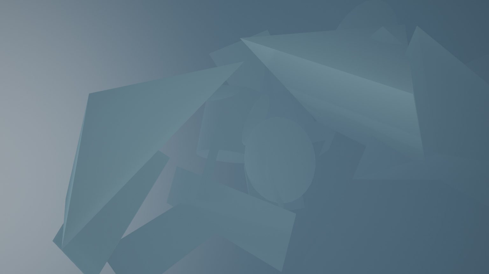
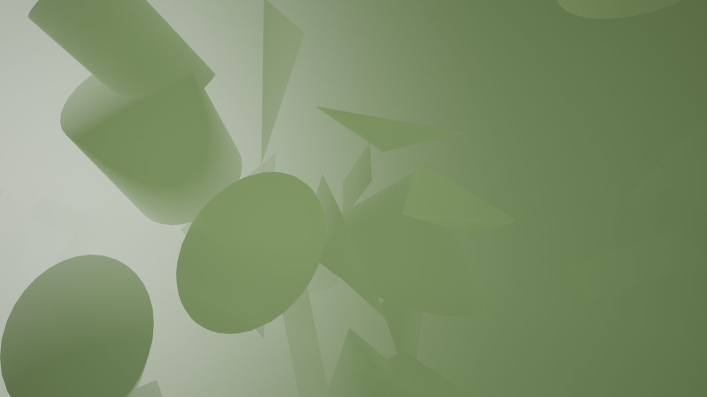
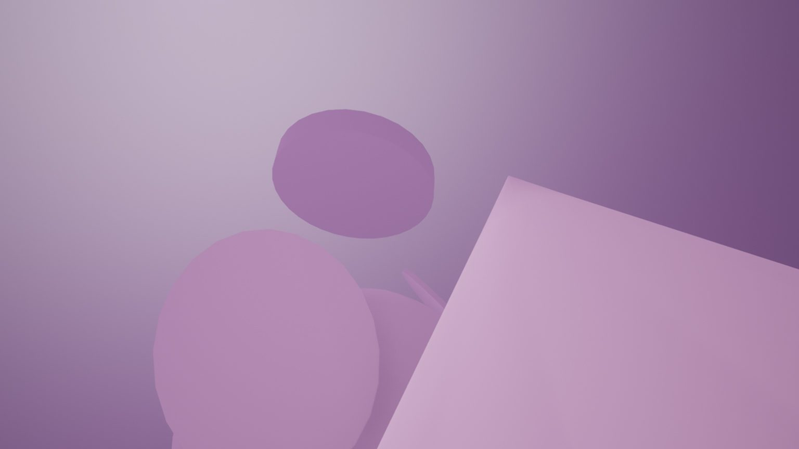
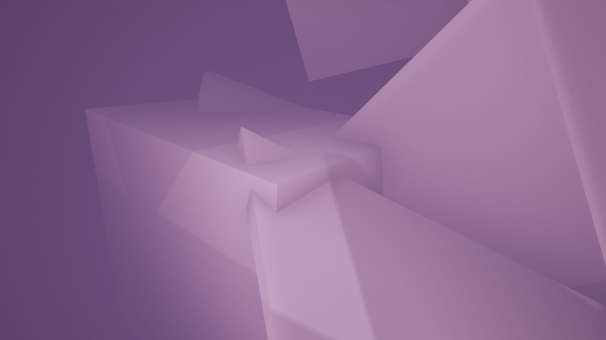
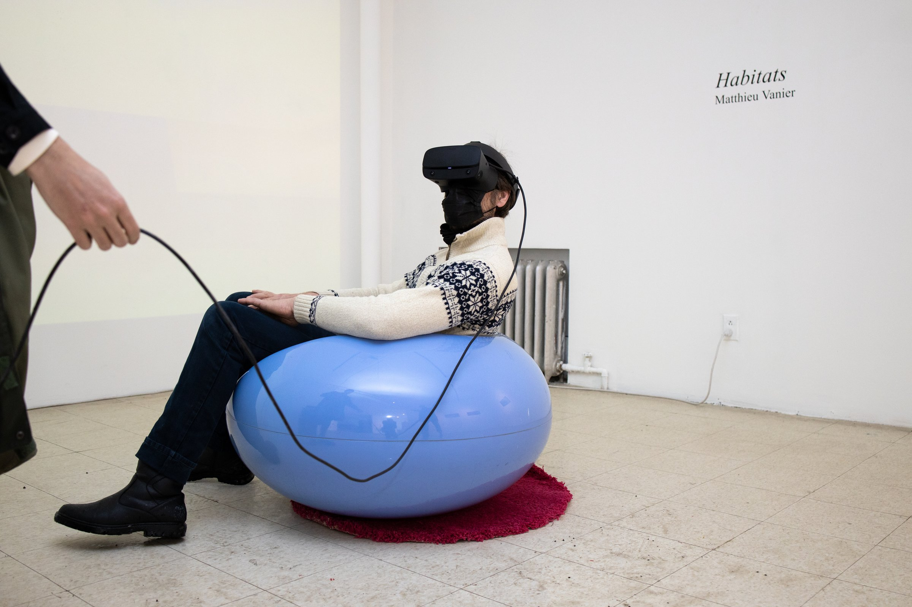
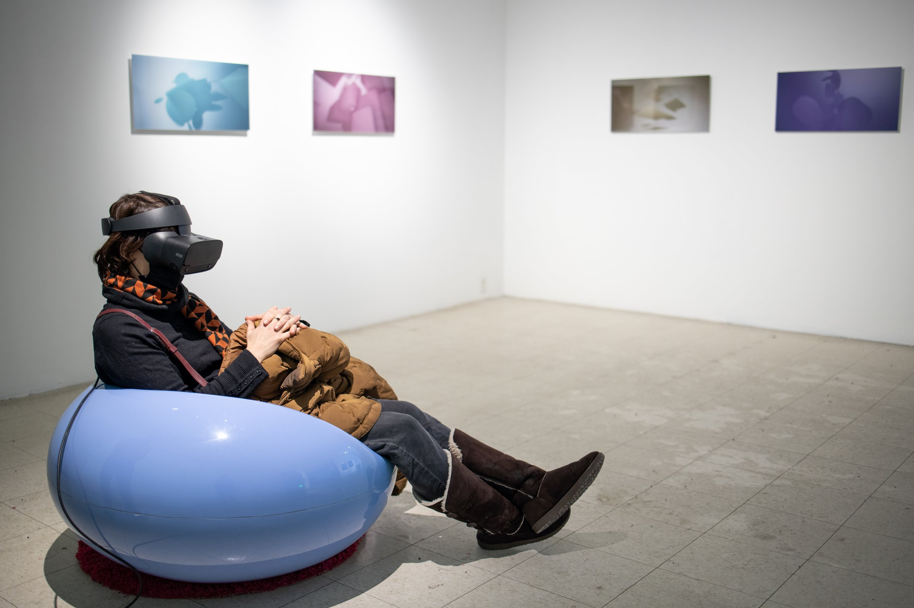
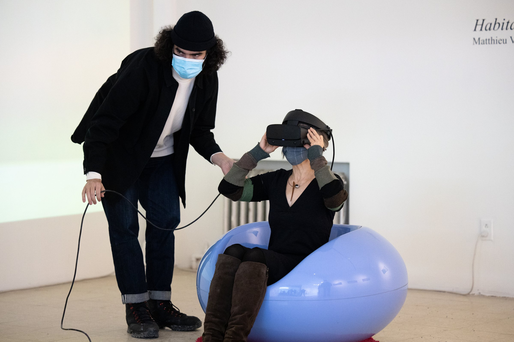
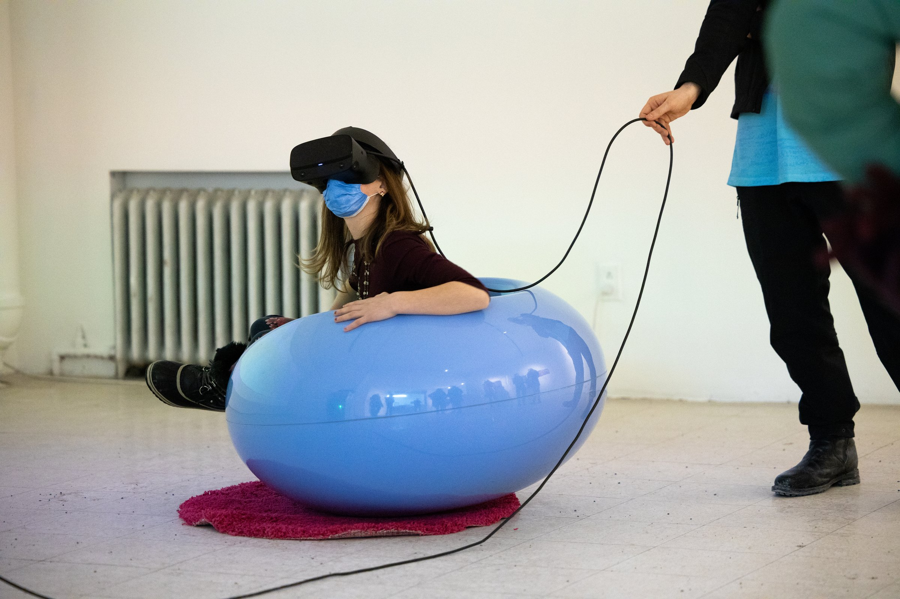

Visitors choose their own path through majestic, minimalist shapes, a world of floating architectural forms unbound by gravity or function. The longest-running VR exhibition of the Art Mûr program.
Habitats is a VR experience that explores space, physicality and time. The piece changes throughout the exposition. At the beginning, the world is orderly, clean and controlled. As the show progresses, the world fragments, becoming more chaotic, moving in unpredictable ways. This time-based corruption creates a continuously changing landscape and a narrative that shifts chronologically.
The experience suggests a dephysicalization. We are no longer physical bodies within a world, rather spirits floating through a digital mindscape. For these brief moments, we become light, colour, sound, a landscape of ancient entities in eternal confluence. We perceive a soft cycle of creation and destruction, the pulse of a cosmic breath.

The world begins orderly and clean. As the show progresses, it fragments, moving in unpredictable ways. Each visit reveals a different stage of entropy.



Installation photographs from Galerie Art Mûr. Habitats ran for over three months, the longest exhibition of the VR program, allowing the time-based corruption of the virtual world to unfold gradually for returning visitors.



